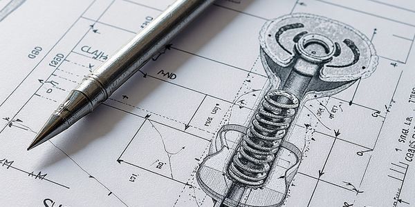

要点速览
了解 GB/T 32076.7 的 M39–M64 适用范围、连接副要求及采购文件。
核对标准适用范围
GB/T 32076.7-2015 适用于预载荷结构连接中 M39–M64 大六角头螺栓和螺母连接副。它并不是适用于所有高强度螺栓或所有公制直径的通用标准。
中国官方标准记录列出的发布日期为 2015 年 10 月 9 日，实施日期为 2016 年 6 月 1 日。采购要求中应注明所需版本，并在订货前核对项目文件。
资料来源: GB/T 32076.7-2015
明确连接副配置
说明螺栓与螺母组合，以及项目要求的垫圈。逐项注明各部件的直径、螺距、长度、性能等级、表面处理和数量。外观相似的螺栓，并不能证明整套连接副满足相同要求。
将交付标识和检验记录与供货批次对应保存。评估替代方案时，应先比较尺寸与装配要求，再决定是否接受其他标准。
约定安装要求
仅凭强度等级无法确定安装扭矩。应由项目工程师明确所需预紧力、紧固方法和验收检查，并确认供货时的润滑及涂层与约定的安装工艺一致。
不能将较小螺栓、其他涂层或不同连接副使用的扭矩，直接按比例套用到 M39–M64 连接中。
签发采购订单之前
附上已批准的图纸和标准版本。请供应商确认尺寸符合性、连接副标识、所需力学试验、涂层细节及追溯文件。任何拟议偏差都应明确记录，便于项目团队在制造前审核。
技术参考资料
准备好紧固件采购要求了吗？
提供图纸和需求，开始询价。